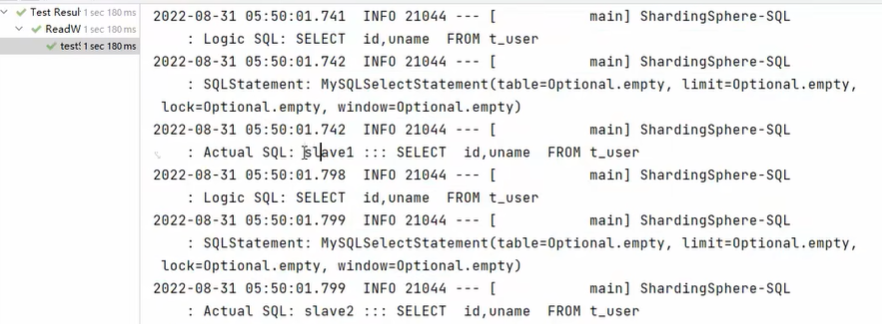
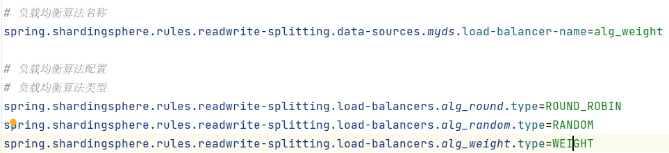
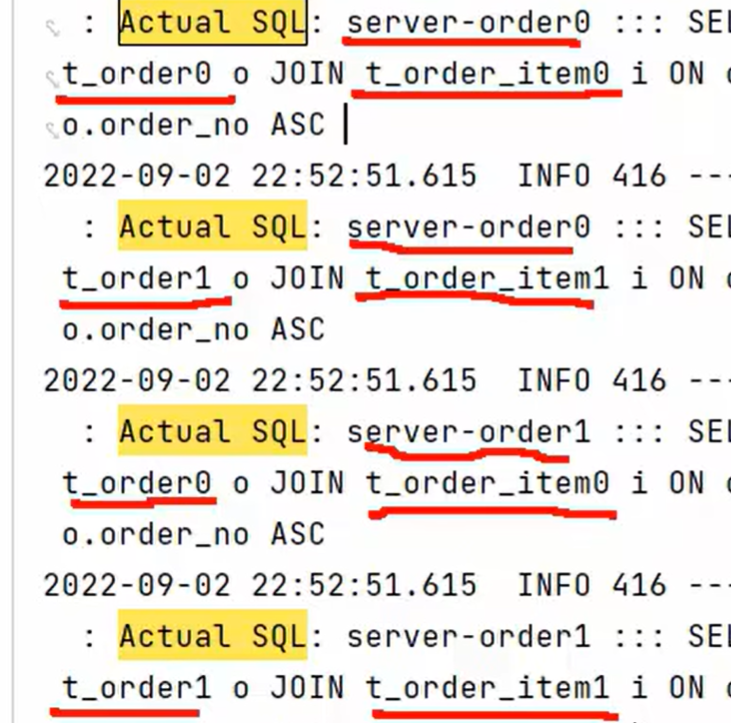

1207 ShardingSphere @Transactional的用法
不添加@Transactional：insert 对主库 操作，select 对从库 操作
添加@Transactional：则insert 和select 均对主库 操作
Java配置主从数据库的示例：
添加依赖项
1 2 3 4 5 6 7 8 9 10 11 12 <dependency > <groupId > com.baomidou</groupId > <artifactId > dynamic-datasource-spring-boot-starter</artifactId > </dependency > <dependency > <groupId > com.alibaba</groupId > <artifactId > druid-spring-boot-starter</artifactId > </dependency > <dependency > <groupId > mysql</groupId > <artifactId > mysql-connector-java</artifactId > </dependency >
在 application.yml 文件中配置主从数据源
1 2 3 4 5 6 7 8 9 10 11 12 13 14 spring: datasource: dynamic: master: driver-class-name: com.mysql.cj.jdbc.Driver url: jdbc:mysql://localhost:3306/masterdb username: root password: root slave: driver-class-name: com.mysql.cj.jdbc.Driver url: jdbc:mysql://localhost:3306/slavedb username: root password: root enabled: true
在代码中配置数据源
1 2 3 4 5 6 7 8 @Configuration public class DataSourceConfig {@Bean @ConfigurationProperties(prefix = "spring.datasource.dynamic") public DataSource dataSource () {return new DruidDataSource ();
在代码中使用数据源
1 2 3 4 5 6 7 8 9 10 11 12 13 14 15 16 17 18 19 @Service public class UserServiceImpl implements UserService {@Autowired private JdbcTemplate jdbcTemplate;@Override @DataSource("master") public void addUser (User user) {String sql = "INSERT INTO user (name, age) VALUES (?, ?)" ;@Override @DataSource("slave") public User getUserById (Long id) {String sql = "SELECT * FROM user WHERE id = ?" ;return jdbcTemplate.queryForObject(sql, new Object []{id}, new BeanPropertyRowMapper <>(User.class));
详细SpringBoot多数据源(主从数据源)配置https://blog.csdn.net/Confused_/article/details/118059833
***userMapper.selectList(null)***：查询数据库中的所有记录并返回一个列表
@TableField:
@TableField(value = “表字段”)：会自动识别成驼峰命名，例如：
1 2 @TableField(value = "user_name") private String uName;
如果不加@TableField，uName会被识别成u_name在数据库中查找
@TableField(select = false)：用来解决如果用户名密码不想显示时可以在属性上添加该字段sql语句就不会去查询该字段。这样在查询时密码字段会变成null输出
@TableField(exist = false)：数据库中没有该字段时需要添加注解
测试负载均衡：
1 2 3 4 5 6 7 @Test public void testSelectAll () {null );null );

查询有Actual SQL和Logic SQL
三个负载均衡算法

@TableId(type = IdType.AUTO)//依赖数据库的主键自增策略
标椎分片表配置：
1 2 3 4 5 6 spring.shardingsphere.rules.sharding.tables.t_user.actual-data-nodes =server-user.t_user spring.shardingsphere.rules.sharding.tables.t_order.actual-data-nodes =server-order0.t_order0,server-order0.t_order1,server-order1.t_order0,server-order1.t_order1
行表达式：
1 2 3 4 5 6 spring.shardingsphere.rules.sharding.tables.t_user.actual-data-nodes =server-user.t_user spring.shardingsphere.rules.sharding.tables.t_order.actual-data-nodes =server-order$->{0..1}.t_order$->{0..1}
分库策略：
1 2 3 4 5 6 7 8 9 10 11 12 13 14 15 16 17 18 spring.shardingsphere.rules.sharding.tables.t_order.database-strategy.standard.sharding-column =user_id spring.shardingsphere.rules.sharding.tables.t_order.database-strategy.standard.sharding-algorithm-name =alg_inline_userid spring.shardingsphere.rules.sharding.sharding-algorithms.alg_inline_userid.type =INLINE spring.shardingsphere.rules.sharding.sharding-algorithms.alg_inline_userid.props.algorithm-expression =server-order$->{user_id % 2} spring.shardingsphere.rules.sharding.sharding-algorithms.alg_mod.type =MOD spring.shardingsphere.rules.sharding.sharding-algorithms.alg_mod.props.sharding-count =2
在原来水平分片配置的基础上添加如下配置：
1 2 spring.shardingsphere.rules.sharding.binding-tables[0] =t_order,t_order_item
配置完绑定表后再次进行关联查询的测试：
绑定表：指分片规则一致的一组分片表。 使用绑定表进行多表关联查询时，必须使用分片键进行关联，否则会出现笛卡尔积关联或跨库关联，从而影响查询效率。

广播表：插入更新在所有的表上执行，查询操作在一个节点上执行，
分布式序列算法 雪花算法：
https://shardingsphere.apache.org/document/5.1.1/cn/features/sharding/concept/key-generator/
水平分片需要关注全局序列，因为不能简单的使用基于数据库的主键自增。
这里有两种方案：一种是基于MyBatisPlus的id策略；一种是ShardingSphere-JDBC的全局序列配置。
基于MyBatisPlus的id策略：将Order类的id设置成如下形式
1 2 @TableId(type = IdType.ASSIGN_ID) private Long id;
基于ShardingSphere-JDBC的全局序列配置：和前面的MyBatisPlus的策略二选一
1 2 3 4 5 6 7 8 9 10 11 spring.shardingsphere.rules.sharding.tables.t_order.key-generate-strategy.column =id spring.shardingsphere.rules.sharding.tables.t_order.key-generate-strategy.key-generator-name =alg_snowflake spring.shardingsphere.rules.sharding.key-generators.alg_snowflake.type =SNOWFLAKE
此时，需要将实体类中的id策略修改成以下形式：
1 2 3 @TableId(type = IdType.AUTO)